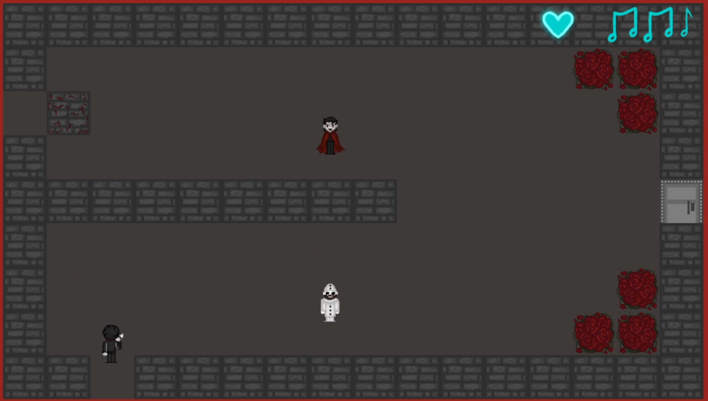
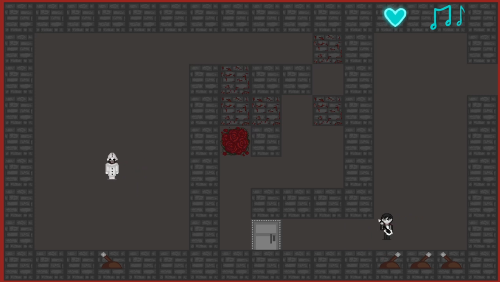
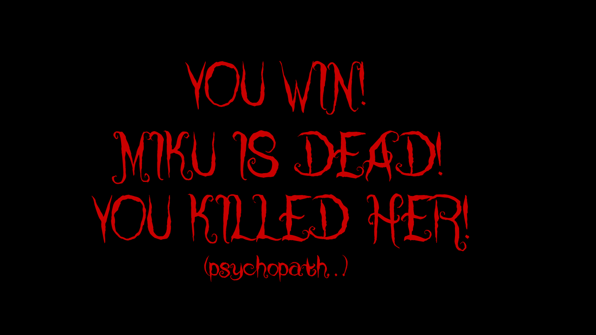
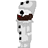
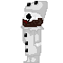

Gameplay
In Escape the Black Parade, you play a top-down dungeon-exploring protagonist trying to defeat the clone that's taken over the dungeon! In navigating the dungeon, your protagonist must circumvent hazards and obstacles, open locked doors, and outmaneouver enemies. A helpful NPC teaches you the basics, but will you be able to survive the onslaught at the end?
Controls
- WASD: Up/Down/Right/Left movement
- E: Interact with the NPC or levers
- J: Attack
- R: Restart after game over
Game Mechanics
- Hazards, Enemies, and Obstacles
- Roses deal damage in close proximity, and can be removed by attacking them
- Parts of some walls are breakable if you attack them. You can recognize them by the scratches in their texture.
- Levers can be flipped by interacting with them and will generally open a door. Levers can either be flipped once or back and forth.
- Doors require a lever to open. The lever for a room may not be in the room the door is in!
- Clowns will hurt you if you get close enough. They take more hits to defeat than vampires but are slower.
- Vampires will also hurt you! They're faster but more fragile than clowns.
- The Dummy is just there to help you practice! How helpful!
- Boss Fight
- Once the dialogue and starting sequence is over, the fight will start.
- Each fight "cycle" consists of the following two stages:
- Attack stage: Here, Miku is inaccessible. The player should focus on avoiding damage and taking care of hazards and enemies. During this stage, Miku will attack three times (four on the first cycle), randomly selected from the following:
- Summon Roses: Miku will randomly place 1-5 roses down in the main area, taking care to not place them where the player is or where they get knocked back when the curtain closes.
- Summon Enemies: Similarly to the above, Miku will spawn 1-2 enemies that the player then has to avoid or defeat.
- Throw Fireballs: Miku will throw 1-2 moving fireballs across the stage, which will damage the player if they hit.
- After the attack stage the stagger stage happens - the curtains open up and the player is able to reach the boss to attack. At the end of this stage, the curtains close back up and the player is thrown back outside the stage area.
- Attack stage: Here, Miku is inaccessible. The player should focus on avoiding damage and taking care of hazards and enemies. During this stage, Miku will attack three times (four on the first cycle), randomly selected from the following:
-
Miscellaneous
- Attacking will hurt anything (that you can attack or destroy) in front of you - you can't attack again until the current attack animation is over.
- In the first (NPC) and last room (starting sequence) dialogue takes place. You can advance the dialogue by pressing E.
- To start the game, the player just needs to press any key.
- The UI for the player's HP can be seen in the top right corner, notated by the heart. A single note represents 1h, and a double note represents 2hp. So at full HP (5), the player will have two double notes and one single note (2 x 2hp +1hp).
- Healing items can be found in the first room and the room before the boss fight, and will replenish the player's HP.
- The player respawns at the last summoning circle they've crossed onto. The first is where you spawn at the beginning of the game, and the second is in the room before the boss fight.
- Because of how the browser handles keyboard input, the first movement in a direction will be staggered, then smoothen out & speed up.
Gallery
Opening Screen

The first room

Attack animation

NPC dialogue

The second room
The third room
The fourth room

Boss dialogue

Boss attack phase

Boss stagger phase

Game over screen

Game won screen



 
